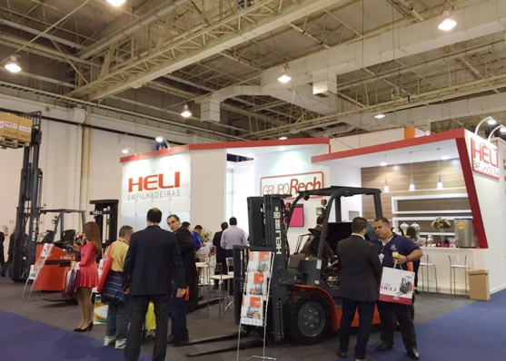
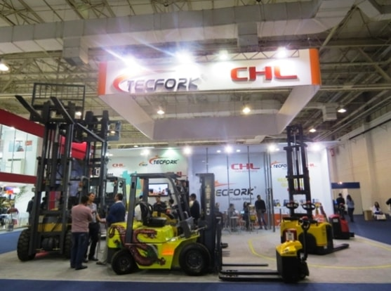

On Jun.30th~Jul.3rd, ANHUI HELI CO. LTD. participated the CeMat 2015 at Sao Paulo of Brazil, the most important intra-logistics event in South America with approximately 25000 visitors in attendance, showing the famous two brands: HELI and CHL, firstly at the same fair.
Brazil's economy gets much gloomier this year and the Brazilian real continued its collapse and come to its weakest for more than a decade and has lost half of its value since its peak of R$1.54 to the dollar in July of 2011. CeMat 2015 opened at this difficult time, but it was the perfect opportunity to remind friends in the South American market, both new and old, that ANHUI HELI CO., LTD' s presence is still solid and our commitment to providing BEST products with good quality is steadfast, not matter HELI or CHL brand.

As the NO.8 biggest manufacturer of forklift trucks in the world, Anhui HELI came into the stock market
since 1996 and have been NO.1 for 24years continuously with around 35% marketing share in China. Anhui
HELI Co, Ltd. exhibited CeMat Brazil 2015 with Brands: HELI and CHL, earnest about reinforcing existing
partnerships, developing new relationships and displaying our newest releases.
CeMat 2015 brought together all segments of the material handling, logistics and intra-logistics industries
in South America, showing more various users with different products, paying particular attention to the
technology innovation in each sector—An ideal audience of HELI and CHL products.
@Anhui Heli Co., Ltd. Baoji Heli Forklift Truck Plant all rights reserved.